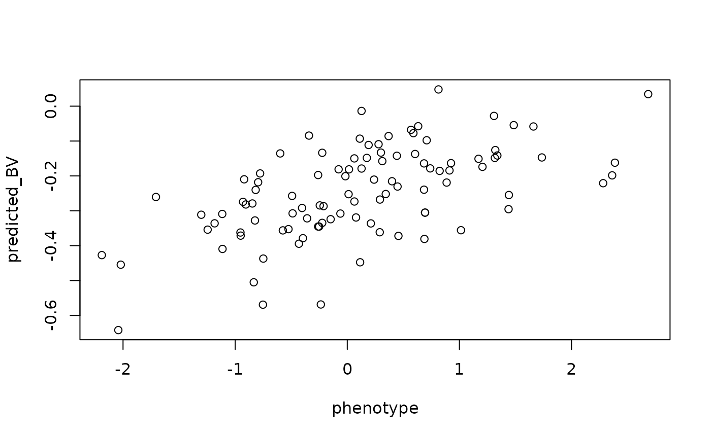

Interface with BGLR to run genomic prediction with snpRdata objects.
run_genomic_prediction.RdRun genomic prediction given a single response variable (usually a phenotype)
using the BGLR function. Unlike other snpR functions,
this returns the resulting model directly, so overwrite with caution.
Usage
run_genomic_prediction(
x,
facets = NULL,
response,
iterations,
burn_in,
thin,
model = "BayesB",
interpolate = "bernoulli",
ncp = NULL,
ncp.max = 5,
par = FALSE,
verbose = FALSE,
...
)Arguments
- x
snpRdata object
- facets
character, default NULL. Categorical metadata variables by which to break up analysis. See
Facets_in_snpRfor more details.- response
character. Name of the column containing the response variable of interest. Must match a column name in sample metadata.
- iterations
numeric. Number of iterations to run the MCMC chain for.
- burn_in
numeric. Number of burn in iterations to run prior to the MCMC chain.
- thin
numeric. Number of iterations to discard between each recorded data point.
- model
character, default "BayesB". Prediction model to use, see description for the ETA argument in
BGLR.- interpolate
character, default "bernoulli". Interpolation method for missing data. Options:
bernoulli: binomial draws for the minor allele.
af: insertion of the average allele frequency
iPCA: As a slower but more accurate alternative to "af" interpolation, "iPCA" may be selected. This an iterative PCA approach to interpolate based on SNP/SNP covariance via
imputePCA. If the ncp argument is not defined, the number of components used for interpolation will be estimated usingestim_ncpPCA. In this case, this method is much slower than the other methods, especially for large datasets. Setting an ncp of 2-5 generally results in reasonable interpolations without the time constraint.
- ncp
numeric or NULL, default NULL. Used only if
iPCAinterpolation is selected. Number of components to consider for iPCA sn format interpolations of missing data. If null, the optimum number will be estimated, with the maximum specified by ncp.max. This can be very slow.- ncp.max
numeric, default 5. Used only if
iPCAinterpolation is selected. Maximum number of components to check for when determining the optimum number of components to use when interpolating sn data using the iPCA approach.- par
numeric or FALSE, default FALSE. If a number specifies the number of processing cores to use across facet levels. Not used if only one facet level.
- verbose
Logical, default FALSE. If TRUE, some progress updates will be printed to the console.
- ...
additional arguments passed to
BGLR
Value
A list containing: two parts:
x: The provided snpRdata object with effect sizes merged in.
models: Other model results, a list containing:
model: The model output from BGLR. See
BGLR.h2: Estimated heritability of the response variable.
predictions: A data.frame containing the provided phenotypes and the predicted Breeding Values (BVs) for those phenotypes.
Details
This function is provided as a wrapper to plug snpRdata objects into the
BGLR function in order to easily run genomic prediction
on a simple model where a single, sample specific meta data variable is
provided as the response variable. To do so, this function formats the data
into a transposed "sn" format, as described in format_snps
using the bernoulli method to interpolate missing genotypes. Several
different prediction models are available, see the documentation the ETA
argument in BGLR for details. Defaults to the "BayesB"
model, which assumes a "spike-slab" prior for allele effects on phenotype
where most markers have a very small effect size and a few can have a much
larger effect.
Unlike most snpR functions, this function does not support facets, since each
run can be very slow. Instead, an individual facet and facet level of
interest should be selected with subset_snpR_data. See
examples.
See documentation for BGLR for more details and for a
full list of references.
Examples
# run and plot a basic prediction
## add some dummy phenotypic data.
dat <- stickSNPs
sample.meta(dat) <- cbind(weight = rnorm(ncol(stickSNPs)),
sample.meta(stickSNPs))
## run prediction
gp <- run_genomic_prediction(dat, response = "weight", iterations = 1000,
burn_in = 100, thin = 10)
## dummy phenotypes vs. predicted Breeding Values for dummy predictions.
# given that weight was randomly assigned, definitely overfit!
with(gp$models$.base_.base$predictions, plot(phenotype, predicted_BV))

## fetch estimated loci effects
get.snpR.stats(gp$x, stats = "genomic_prediction")
#> $single
#> facet subfacet chr position .snp.id weight_gp_effect
#> 1 .base .base groupVI 212436 1 -2.989809e-02
#> 2 .base .base groupXVIII 350070 2 -2.738966e-02
#> 3 .base .base groupXV 854285 3 1.811316e-02
#> 4 .base .base groupXIII 907279 4 -1.464528e-02
#> 5 .base .base groupVI 1068620 5 -3.047542e-03
#> 6 .base .base groupV 1392753 6 -7.091207e-03
#> 7 .base .base groupIX 2075079 7 -4.378471e-03
#> 8 .base .base groupXIII 2106000 8 -3.190625e-02
#> 9 .base .base groupXII 2136587 9 3.082834e-03
#> 10 .base .base groupXVII 2560839 10 -3.083040e-02
#> 11 .base .base groupIII 2750695 11 -4.944952e-03
#> 12 .base .base groupXIX 3008524 12 -3.390178e-03
#> 13 .base .base groupXVI 3624417 13 -9.233768e-03
#> 14 .base .base groupVII 3667528 14 6.726070e-03
#> 15 .base .base groupVII 4189120 15 7.438895e-03
#> 16 .base .base groupXX 4538074 16 -3.604488e-02
#> 17 .base .base groupXIII 4706089 17 -8.684713e-03
#> 18 .base .base groupIII 4746808 18 -3.617996e-02
#> 19 .base .base groupXVII 5041995 19 -1.791551e-02
#> 20 .base .base groupX 5161637 20 2.966406e-02
#> 21 .base .base groupXII 5178037 21 -5.252224e-02
#> 22 .base .base groupIX 5287711 22 -1.705041e-02
#> 23 .base .base groupVIII 5462135 23 -1.141352e-02
#> 24 .base .base groupIX 5960933 24 5.025692e-03
#> 25 .base .base groupXIII 6076868 25 -1.242356e-02
#> 26 .base .base groupXI 6177332 26 6.973144e-03
#> 27 .base .base groupIV 6291287 27 3.244421e-02
#> 28 .base .base groupIX 6515796 28 -7.824816e-03
#> 29 .base .base groupXII 6718079 29 -6.222918e-03
#> 30 .base .base groupVII 6967477 30 1.919790e-02
#> 31 .base .base groupIII 7194069 31 -2.758574e-02
#> 32 .base .base groupXVI 7199722 32 -5.548156e-02
#> 33 .base .base groupVIII 7224065 33 -1.572507e-02
#> 34 .base .base groupXVIII 7229426 34 2.763108e-03
#> 35 .base .base groupXVIII 8087022 35 -2.064732e-02
#> 36 .base .base groupIX 8373442 36 9.052358e-03
#> 37 .base .base groupXV 8815538 37 -9.682244e-02
#> 38 .base .base groupXI 9019877 38 -1.371590e-02
#> 39 .base .base groupXXI 9067876 39 -1.044911e-02
#> 40 .base .base groupXVII 9108184 40 -9.398092e-03
#> 41 .base .base groupIX 9284427 41 -1.934128e-02
#> 42 .base .base groupV 9767769 42 -6.173959e-03
#> 43 .base .base groupXII 9881312 43 2.587101e-02
#> 44 .base .base groupXX 10296516 44 1.811489e-03
#> 45 .base .base groupI 10593829 45 -8.662228e-03
#> 46 .base .base groupXIX 10765968 46 5.216002e-03
#> 47 .base .base groupII 10829169 47 1.265053e-02
#> 48 .base .base groupXX 10913115 48 -4.606244e-03
#> 49 .base .base groupXVIII 10974594 49 8.134136e-04
#> 50 .base .base groupXVII 11256661 50 -4.207799e-03
#> 51 .base .base groupVIII 11438870 51 -7.223061e-03
#> 52 .base .base groupVII 11477223 52 -1.646263e-02
#> 53 .base .base groupII 11505084 53 1.271268e-02
#> 54 .base .base groupIX 11904651 54 -3.328782e-03
#> 55 .base .base groupVIII 12108945 55 -1.463314e-02
#> 56 .base .base groupXIX 12485182 56 -3.019133e-02
#> 57 .base .base groupXI 12833733 57 3.345978e-02
#> 58 .base .base groupXVIII 12937786 58 -1.597123e-02
#> 59 .base .base groupIII 13177027 59 8.650602e-04
#> 60 .base .base groupVI 13335577 60 -1.958645e-02
#> 61 .base .base groupX 13718292 61 2.471244e-02
#> 62 .base .base groupVI 13895716 62 -1.553641e-03
#> 63 .base .base groupXIV 14009990 63 7.726512e-03
#> 64 .base .base groupXII 14158350 64 2.832932e-02
#> 65 .base .base groupIX 14164215 65 -3.985459e-02
#> 66 .base .base groupVI 14236496 66 2.512769e-02
#> 67 .base .base groupX 14273796 67 -1.001954e-02
#> 68 .base .base groupVIII 14445389 68 -3.751786e-03
#> 69 .base .base groupIX 14868533 69 1.493804e-02
#> 70 .base .base groupIX 15190693 70 -1.779871e-02
#> 71 .base .base groupXII 15306362 71 -1.407435e-02
#> 72 .base .base groupXX 15460430 72 2.768628e-02
#> 73 .base .base groupVII 15493025 73 -1.321890e-03
#> 74 .base .base groupXV 15547073 74 1.061197e-03
#> 75 .base .base groupXIII 15697285 75 1.208731e-02
#> 76 .base .base groupIII 15983994 76 -3.768605e-03
#> 77 .base .base groupXIX 16233699 77 -8.314350e-03
#> 78 .base .base groupIX 16306966 78 4.276501e-03
#> 79 .base .base groupI 16498302 79 2.448502e-02
#> 80 .base .base groupXIII 16520929 80 -2.219410e-02
#> 81 .base .base groupXVI 16561891 81 -2.030140e-02
#> 82 .base .base groupII 16598364 82 -1.227318e-02
#> 83 .base .base groupIV 17248473 83 -2.290201e-02
#> 84 .base .base groupXX 17748944 84 -4.765068e-04
#> 85 .base .base groupXIII 17842228 85 3.188415e-04
#> 86 .base .base groupXIX 17858769 86 -5.396778e-03
#> 87 .base .base groupIX 17929225 87 1.285677e-02
#> 88 .base .base groupIX 18339767 88 2.340635e-02
#> 89 .base .base groupXIII 18836558 89 -5.056568e-03
#> 90 .base .base groupII 19244005 90 8.484058e-03
#> 91 .base .base groupXX 19317273 91 1.030751e-02
#> 92 .base .base groupI 19759331 92 4.455883e-04
#> 93 .base .base groupVII 20165240 93 -3.840310e-06
#> 94 .base .base groupII 20496069 94 1.033649e-02
#> 95 .base .base groupI 21284266 95 6.103949e-03
#> 96 .base .base groupIV 22227311 96 -8.074882e-03
#> 97 .base .base groupI 22746027 97 -1.308965e-02
#> 98 .base .base groupVII 25239495 98 2.577908e-02
#> 99 .base .base groupVII 27599144 99 -6.658023e-03
#> 100 .base .base groupIV 32321895 100 3.018042e-02
#>
if (FALSE) { # \dontrun{
# with facets, not run
gp <- run_genomic_prediction(gp$x, facets = "pop", response = "weight",
iterations = 1000, burn_in = 100, thin = 10)
get.snpR.stats(gp$x, facets = "pop", stats = "genomic_prediction")
} # }